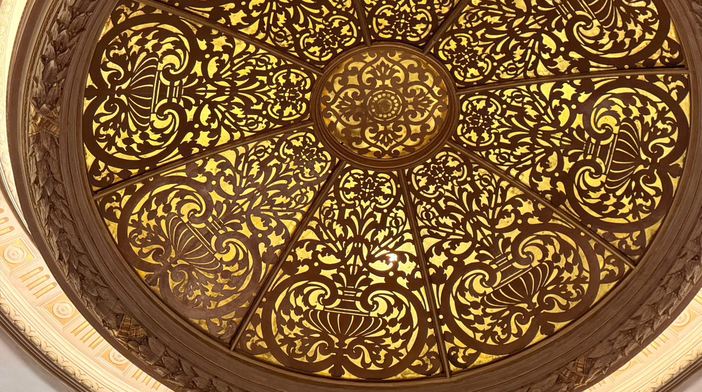
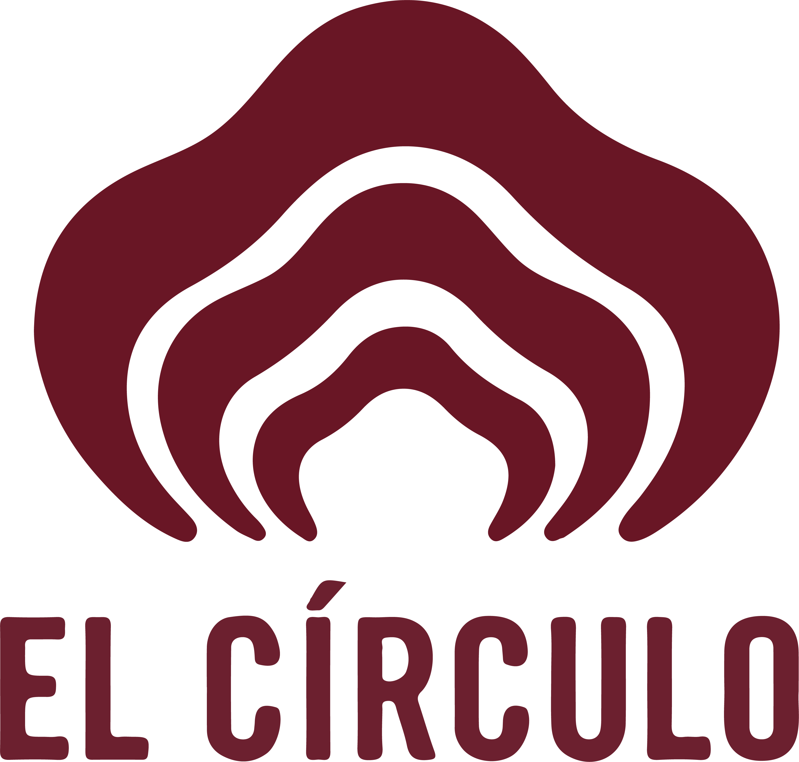
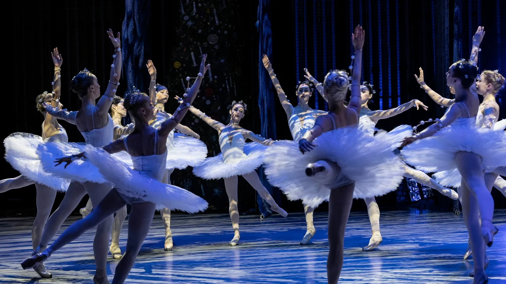

DESTACADA

TEATRO · ARTE · HISTORIA
Un espacio para descubrir, recorrer y volver a mirar el patrimonio cultural de Rosario.

DESTACADA

EXPOSICIÓN

EXPOSICIÓN
LA COLECCIÓN
Explorá las piezas por época, material, artista o tema. La navegación no busca una única ruta: propone conexiones.
Entrar a la colecciónEL TEATRO
El teatro funciona como un lugar de encuentro entre patrimonio, creación contemporánea y comunidad. Esta sección puede reemplazarse por la historia real de la institución.
Conocer nuestra historia →
AGENDA
PLANIFICÁ TU VISITA